Bridging the Modality Gap: Semantic-Calibrated Zero-shot Speech Emotion Captioning with Self-Reward Alignment
Anonymous
Pipeline

Zero-shot Speech Emotion Captioning Evaluation Results
|
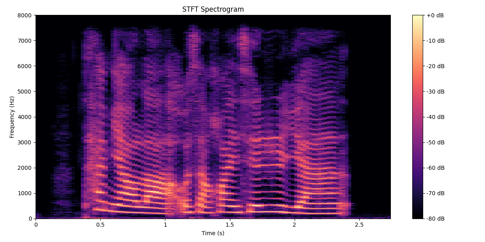
Transciption: "Great ! I want to exchange some yen." |
SER: "Happy" HTSAT-BART: A woman is speaking, and her tone sounds positive. NoAudioCap: The audio is of a woman speaking, in a fast pace, with a neutral tone, and no apparent emotion. SECap: Based on the voice, it sounds like this person is fearful in the audio, and possibly sad. They might be expressing a need or desire for something, possibly related to money or finances. SeCCap: The woman in the audio is happy and cheerful. She speaks quickly, with a rising intonation and a positive tone. |
|
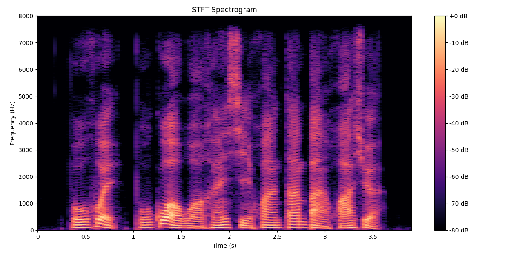
Transciption: "No, but I love snowboarding very much." |
SER: "Neutral" HTSAT-BART: The tone of voice indicates that the person in the audio is emotionally calm. NoAudioCap: The audio is of a man speaking, in a neutral tone, at a normal speed, with no voice changes or emotions. SECap: Based on the voice, it sounds like this person is happy in the audio, and they are expressing excitement or enthusiasm. SeCCap: The man in the audio is neutral. His speaking tone is normal, the intonation is calm, and the speaking speed is medium, saying, \"No, but I love snowboarding very much.\". |
|
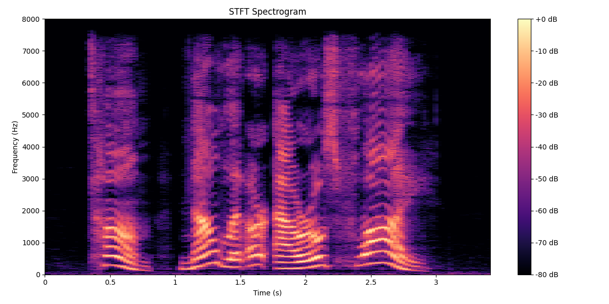
Transciption: "Tom now let our arrows fly!" |
SER: "Surprise" HTSAT-BART: The emotion of the person in the audio is angry. His tone is negative and impatient, and his speaking speed is fast. NoAudioCap: The tone of voice indicates that the person in the audio is emotionally argry. SECap: Based on the voice, it sounds like this person is happy in the audio, and their emotions are: happy. SeCCap: This is a man speaking, in a positive and happy tone. He speaks English with a fast speaking speed, and the content was: "Tom now let our arrows fly!". |
|
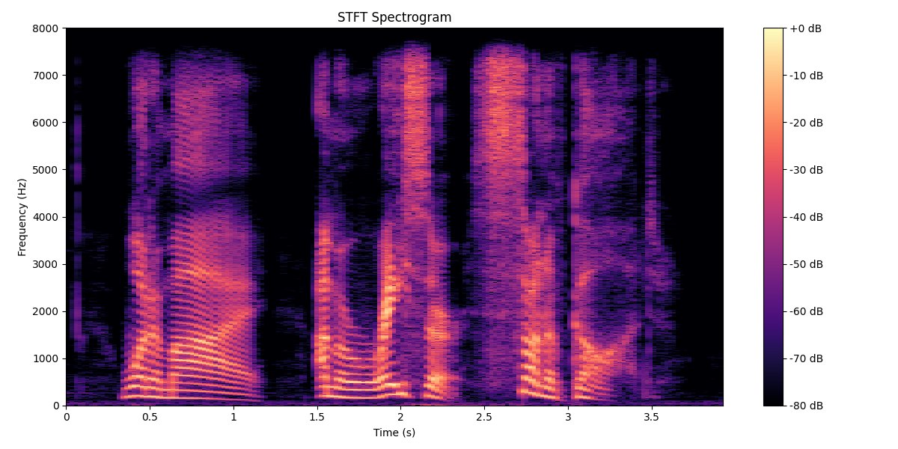
Transciption: "What am I, I'm a racer, son of god!" |
SER: "Angry" HTSAT-BART: This is a man speaking, in an excited tone, with a fast speaking speed. NoAudioCap: The content of voice is: "What am I? I'm a racer, son of God!". SECap: Based on the voice, it sounds like this person is angry in the audio, possibly expressing disbelief or frustration. SeCCap: The man in the audio is angry. The voice is vehement and the tone is excited. He speaks at a normal speed. The content of the speech is: "What am I? I'm a racer, son of God!". |
|
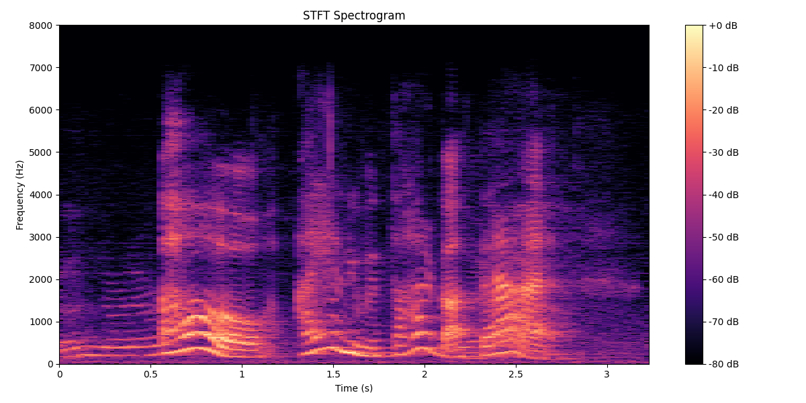
Transciption: "Oh, I hadn't even thought about that." |
SER: "Surprise" HTSAT-BART: Based on the voice, it sounds like this person is surprised in the audio, possibly even shocked. NoAudioCap: This is a woman speaking, in a surprised tone, with a fast speaking speed, saying, "Oh, I hadn't even thought about that." SECap: The emotion of the person in the audio is surprise. The voice sounds surprised and perhaps even shocked. Judging from the voice, the speaker was female, and her tone was surprised. SeCCap: The speaker's tone is high-pitched and there is a pause at the beginning of the sentence, which suggests that she is taken aback by the situation they are describing. The use of the word "oh" also implies a sudden realization or awareness of something unexpected. |
|
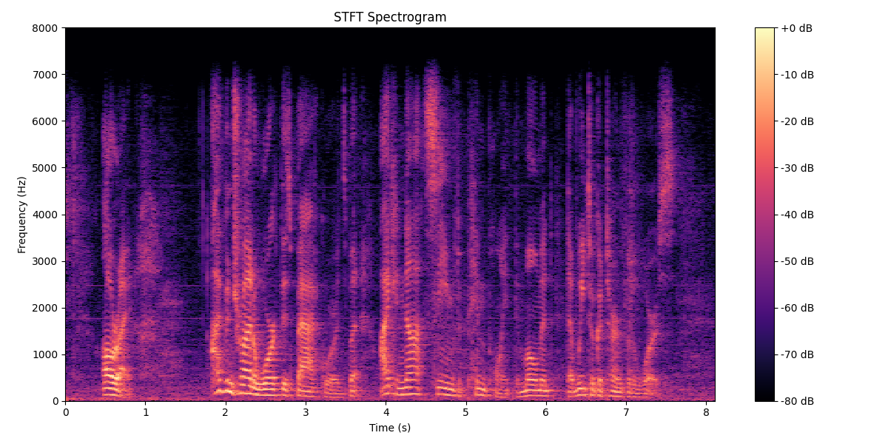
Transciption: "All right. Look, I've been trying to work this backwards, but I cannot seem to figure out the exact moment that we took a turn for the worst." |
SER: "Sad" HTSAT-BART:Based on the voice, it sounds like this person is sad in the audio, possibly expressing regret or disappointment. NoAudioCap: The emotion of the person in the audio is angry. His tone was negative, his speaking speed was medium, and his words were: "Alright I've been trying to work this backwards but I cannot seem to pinpoint the moment that we took a turn for the worse." SECap: This person is sad in the audio, possibly expressing disappointment or frustration. This person may be experiencing anxiety or depression and expressing negative emotions. SeCCap: Based on the voice, it sounds like the man is fearful in the audio, possibly because he is expressing frustration or disappointment. From the tone of voice, it sounds like this person is sad. Additionally, there is a sense of resignation in the voice, as if the person has given up on something. |
|
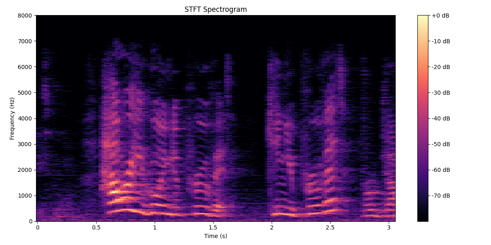
Transciption: "How are you going to prove it? Can you prove it?" |
SER: "Angry" HTSAT-BART: Based on the voice, it sounds like this person is surprised in the audio. NoAudioCap: This is a woman speaking in a neutral tone. There are no obvious emotions or voice changes in her speech. SECap: The emotion of the person in the audio is angry. There is fear and disgust in the voice, the speech is fast, and the voice changes slowly. Despite the fast pace, a slow change in the voice's quality or volume might suggest that the speaker is trying to keep their emotions in check. SeCCap: The woman in the audio is angry. The presence of fear might be indicated by a slight tremor or strain in the voice, suggesting a sense of vulnerability or concern about the implications of the situation. Disgust could be conveyed through a tone that is contemptuous, possibly with a hint of sarcasm. Rapid speech can signify impatience, a desire to confront the issue head-on, or an attempt to challenge the listener with a barrage of questions. |
Cross-Domain Speech Emotion Captioning Evaluation Results
|
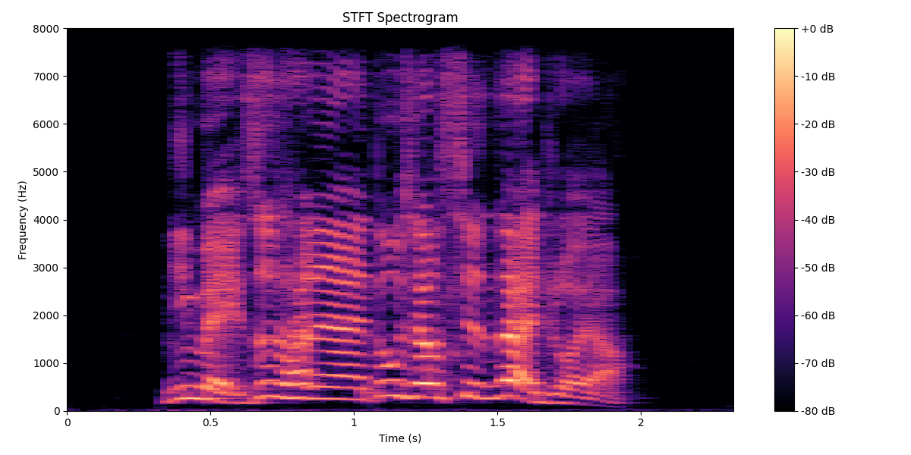
Transciption: "Every time you fall in love, you are as unreasonable as you are now." |
SER: "Angry" HTSAT-BART: This is a man speaking, in an negative tone. NoAudioCap: This is a man speaking, in a angry tone. He sounds like he is angry. SECap: The emotion of the person in the audio is angry. The tone of speech is normal, the tone is angry, and the speed of speech is normal. SeCCap: Based on the voice, it sounds like this person is angry in the audio, and their emotions are intense. They might be expressing frustration or disappointment. From the voice, it sounds like this person is male. |
|
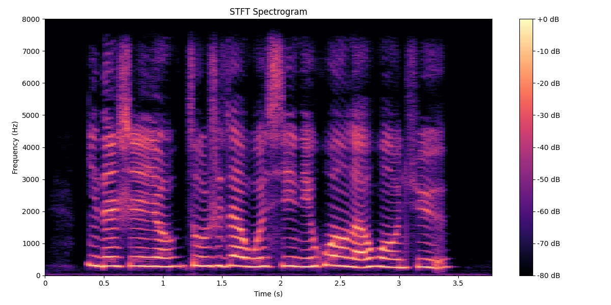
Transciption: "Your figure always lingers in my heart, swaying back and forth." |
SER: "Sad" HTSAT-BART: This is a woman speaking, in a negative tone. NoAudioCap: The audio is of a woman speaking, in a fearful tone, and no obvious inner feelings or voice changes. SECap: Based on the voice, it sounds like this person is fearful in the audio, possibly because of the content of what they are saying. They may be expressing fear, anxiety, or concern. SeCCap: The woman's emotion in this audio is sad. Her speech is characterized by a melancholic tone. The pace at which she speaks is slow. The variation in her voice is a gradual descent in pitch, further emphasizing the weight of her sadness. |
|
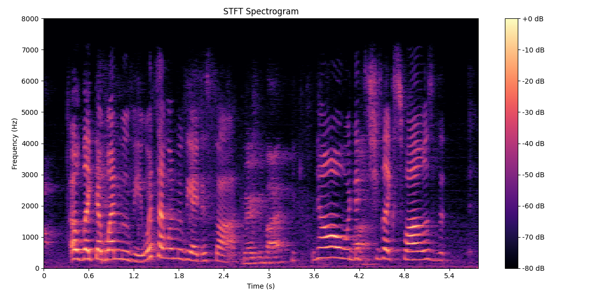
Transciption: "Oh like that one movie. What's that one movie I just saw? No. Where she like swallows the..." |
SER: "Surprise" HTSAT-BART: Based on the voice, it sounds like this person is surprised in the audio, possibly even shocked. NoAudioCap: The emotion of the person in the audio is happy There is a happy tone in the voice, the tone is neutral, the speech rate is normal, and the voice does not change much. SECap: Based on the voice, it sounds like this person is neutral in the audio, and possibly surprised. Some emotions that could be perceived from the voice are neutral, surprise, and possibly confusion. SeCCap: The voice sounds surprised and perhaps even shocked. The speaker's tone is high-pitched and there is a pause at the beginning of the sentence, which suggests that they are taken aback by the situation they are describing. The use of the word "oh" also implies a sudden realization or awareness of something unexpected. |
|
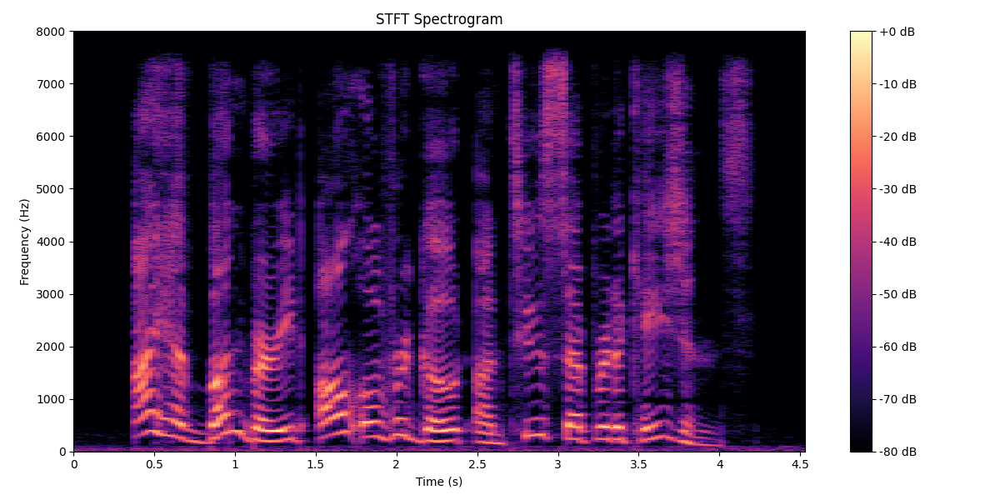
Transciption: "I have bunburyed all over goat on two separate occasions." |
SER: "Happy" HTSAT-BART: This is a woman speaking, in a positive tone. She sounds happy. NoAudioCap: This is a woman speaking, in a happy tone, She sounds natural and relaxed. SECap: Based on the voice, it sounds like this person is happy in the audio, and they are expressing surprise. SeCCap: The woman in the audio is happy, has a positive tone, and speaks at a normal speed. The content of the speech is: "I have bunburied all over goat on two separate occasions." |
|
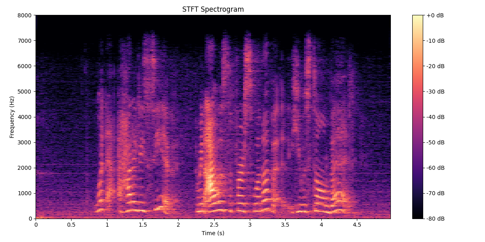
Transciption: "What-how did he see it? I mean, I was the first one up. He was still in bed." |
SER: "Surprise" HTSAT-BART: This is a woman speaking, in a surprised tone. She sounds neutral. NoAudioCap: Based on the voice, it sounds like this person is surprised in the audio. SECap: From the voice, it sounds like this person is surprised, fearful or anxious. SeCCap: Based on the voice, it sounds like this person is surprised in the audio, and possibly fearful or anxious. From the voice, it sounds like this person is female, and they are speaking English: "What? How did he see it? I mean, I was the first one of it. He was still in bed." |
|
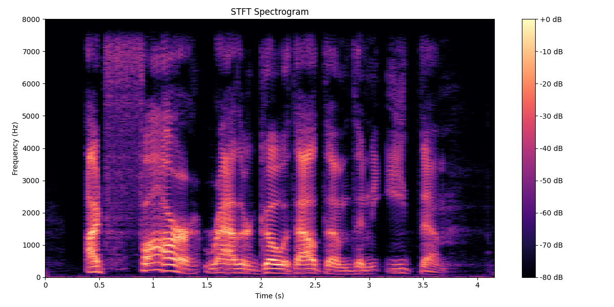
Transciption: "I'd far rather go without them than eat them! " |
SER: "Angry" HTSAT-BART: The person is speaking in a angry tone. NoAudioCap: This is a man speaking, in a angry tone, with a slow speaking speed, saying, \"I'd far rather go without them than eat them.\". SECap: Based on the voice, it sounds like this person is angry in the audio, possibly expressing frustration or disappointment. The emotion of annoyance is evident in the person's vehement declaration of preference. SeCCap: The man in the audio is happy. The use of the phrase "far rather" emphasizes the extent of his aversion. A slow pace can indicate that the he is choosing the words carefully, perhaps to ensure that his strong feelings are fully understood. |
|
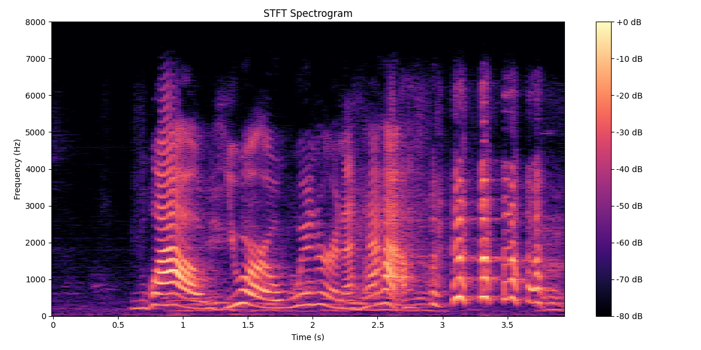
Transciption: "Wow, you are a winner and a half. [LAUGHTER]" |
SER: "Happy" HTSAT-BART: This is a woman speaking, in a happy tone. NoAudioCap: Judging from the tone of voice, the emotion of the person in the audio is surprise. SECap: The emotion of the woman in the audio is happy, the tone is surprised, the speaking speed is normal, and the content of the speech is "Wow, you are a winner and a half!". The speaker is clearly pleased and delighted with the person they are addressing. SeCCap: The phrase "Wow, you are a winner and a half!" followed by laughter suggests a moment of high praise. The use of "Wow" and the phrase "a winner and a half" implies an element of amazement at the person's achievement or performance. The speaker is likely celebrating an achievement or expressing admiration for someone's exceptional performance. |
|
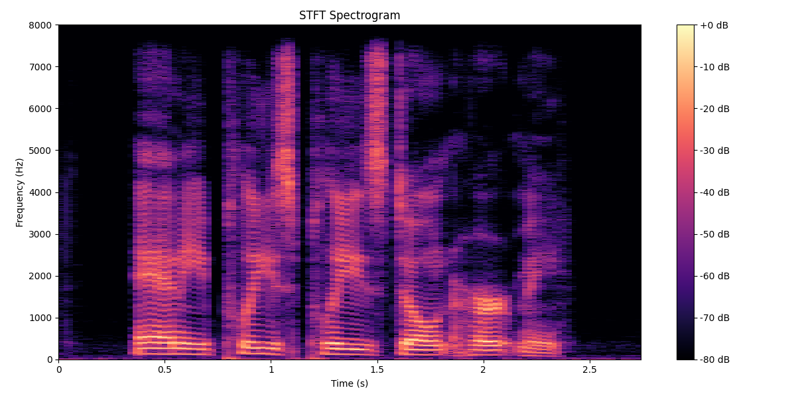
Transciption: "Annie, please please don't hurt me." |
SER: "Neutral" HTSAT-BART: The person is speaking in a negative tone. NoAudioCap: This is a man speaking, in a neutral tone. He sounds natural and there are no voice changes or emotions detected. SECap: Based on the voice, it sounds like this person is fearful in the audio, in a neutral tone, at a normal speed, with no voice changes or emotions. possibly because they are begging or pleading for someone not to hurt them. SeCCap: The man in this audio is Neutral. His words, "please please," emphasizes the gravity of his situation and his need for Annie's understanding and compassion, as he urgently seeks to avoid harm by appealing to Annie's better nature. The lack of significant vocal variation might also indicate that he is trying to maintain a level of composure. |
Other comments
1. We share our code on Anonymous github, which aims to experimental reproduction and verification.
2. We are internally confirming the copyright issues of the model and data, after which the pretrained models will be released.